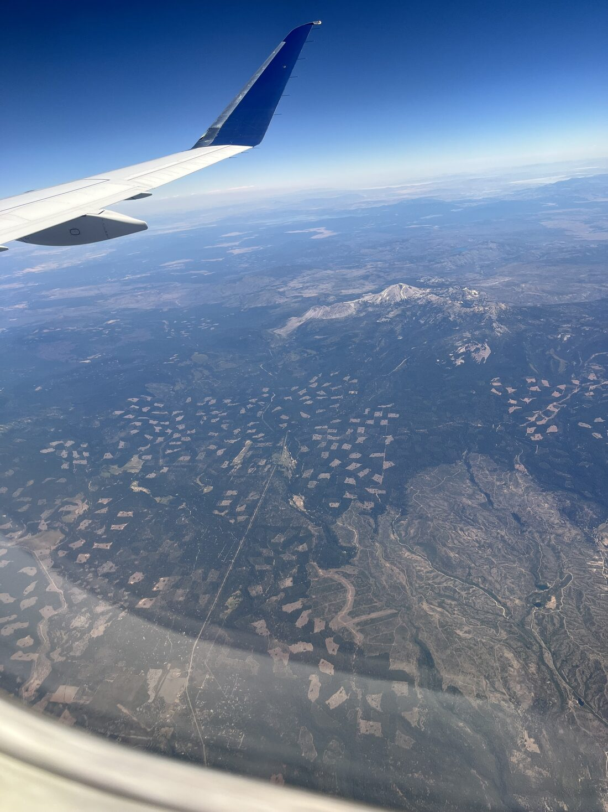
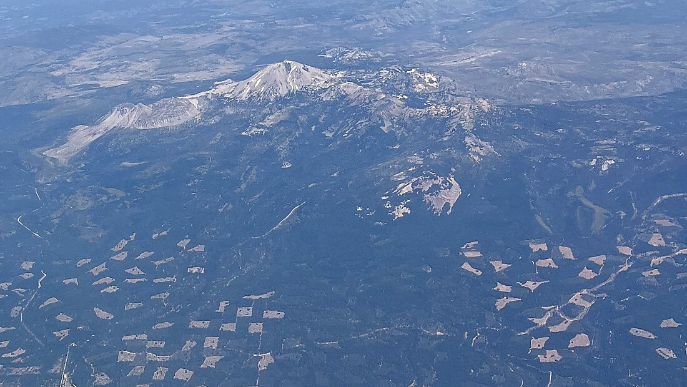
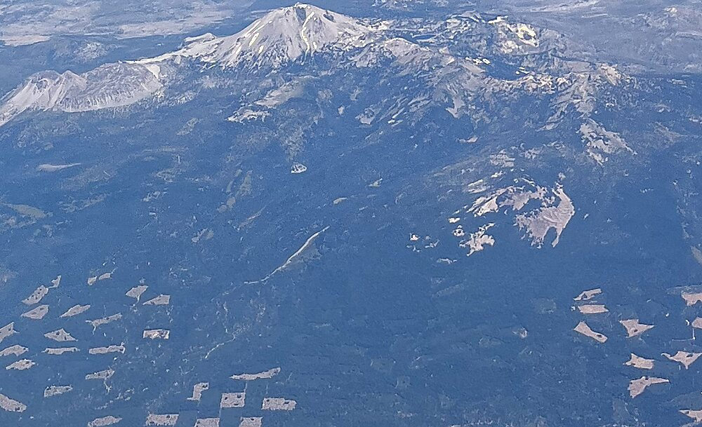
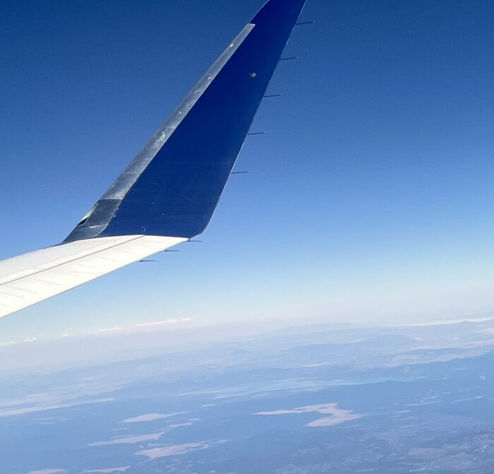

A single frame shot from a northbound regional jet over the upper Sacramento Valley, stripped of location metadata. Identified from sensor data, terrain morphology, solar geometry and flight timing.
10,457 ft (3,187 m) dacite plug dome · Lassen Volcanic National Park · 40.4882°N 121.5049°W. Photographed from roughly 29 nm to the west-southwest, looking 067° true, at 13:31:24 PDT from seat 20C of DL4125. The pale dome cluster left of the summit is Chaos Crags; the bright fan below it is the Chaos Jumbles rockfall-avalanche deposit.
The phone was held rolled almost 90°, so the raw file reads as a portrait image with a near-vertical horizon. Rotating it 90° clockwise recovers the actual view: a snow-streaked volcanic summit at the western end of a rugged highland, with a dense clearcut checkerboard in the near field and a flat interior basin beyond the range.



Chaos Crags sits due north of Lassen Peak. Its appearance on the left of frame fixes the view direction as eastward — independently corroborated by the sun (below).
DL4125 is a SkyWest-operated Embraer E175LL, scheduled SMF 13:17 → SEA 15:25, tracking up the Sacramento Valley past Red Bluff and Redding. The capture timestamp is 13:31:24.618 PDT — roughly 20 minutes after wheels-up, still in the upper climb, near abeam Red Bluff. The orange wedge is the reconstructed 49.6° field of view.
The animation is a reconstruction on a 4.6 s timeline, not an ADS-B replay: the clock, altitude and distance readouts are interpolated along a nominal climb profile. Aircraft position is derived, not tracked — it is the point on the plausible SMF–SEA track that satisfies the photogrammetric range in step 04. Lake outlines are schematic.
EXIF gives a 26 mm-equivalent lens: 69.4° across the long sensor axis, which after roll correction is the vertical axis. That yields a focal length of 1,444 px in the 1500×2000 corrected frame. The summit sits 10.18° below the true horizon. Subtracting horizon dip and solving for slant range with an Earth-curvature correction gives distance as a function of altitude:
| Altitude | Horizon dip | Depression below horiz. | Range | Range |
|---|---|---|---|---|
| FL240 | 2.74° | 7.44° | 32.2 km | 17.4 nm |
| FL280 | 2.96° | 7.22° | 43.4 km | 23.4 nm |
| FL320 — best fit | 3.17° | 7.02° | 55.3 km | 29.9 nm |
| FL360 | 3.36° | 6.82° | 68.1 km | 36.8 nm |
Cross-check: an E175 ~20 minutes after departure is typically passing FL300–FL340 and has covered 95–115 nm. Red Bluff is 94 nm from SMF and 38 nm from Lassen Peak; a point just northeast of it satisfies both the range and the timing. Consistent within a few nautical miles.
Terrain shadows in the frame fall to the left, and the summit's left flank is the shaded one. If shadows point north and north is frame-left, the camera was pointing east — from a northbound aircraft, that is the starboard side. This is derived purely from the timestamp and pixel shading, and it agrees with both the Chaos Crags placement and the wing geometry.

Three independent lines — sun azimuth, Chaos Crags on the left, and the wing running from lower-left (root) to upper-centre (tip) — all put the camera on the right side of the aircraft. Seeing the entire winglet plus the trailing edge from behind places the seat several rows back from the wing box.
On this E175 the lettering is A (port window), B (port aisle), C (starboard aisle), D (starboard window). Confirmed by the passenger: row 20 — the last row — seats C–D, with the frame shot from 20C across the 20D window. The wing box spans roughly rows 11–14, so the camera sat about six rows behind the trailing edge, which is exactly the geometry needed to see the entire winglet from behind.
The purely image-derived claim was starboard side, several rows aft of the wing; the exact row and letter are passenger-confirmed. Shooting from the aisle seat across the window explains the steep camera roll — the phone had to be tilted to clear the window frame, which is visible as the curved cabin-window vignette in the lower right of the original frame.
The obvious first guess, and 165 nm from SMF on nearly the right bearing. But Shasta is a solitary giant standing ~10,000 ft above Shasta Valley, with a conspicuous secondary cone (Shastina) on its west flank and four permanent glaciers that read as solid white masses in late July. The photographed peak has none of these: modest relief above a continuous dome-studded plateau, no satellite cone, and only patchy snow in gullies. Timing also fails — 165 nm in ~20 minutes of flight is not achievable.
Morphologically closer, and also ringed by clearcut checkerboard. But it is 228 nm from SMF — physically unreachable at the capture time, and in Oregon, not "northern California".
256 nm and 291 nm from SMF respectively. Far outside the time budget, and neither matches the single-summit-plus-dome-cluster form.
exiftool -a -G1 and mdls. No GPS block present —
Location Services were off or the phone was in airplane mode. Recovered: iPhone 13 mini, 26 mm equiv,
f/1.6, 1/1647 s, ISO 50, and the precise timestamp 2026-07-29 13:31:24.618 −07:00.
Raw HEIC is 4032×3024 tagged Rotate 90 CW. Applied a 90°
rotation to level the horizon; verified against the Apple AccelerationVector maker-note
(0.115, −0.913, −0.374), which shows the device near-upright with the optical axis ~22° below level.
Upsampled crops from the full-resolution frame. Identified the plug-dome summit form, the Chaos Crags dome cluster with its Chaos Jumbles apron, hydrothermal bare ground, and the Sierra Pacific clearcut checkerboard.
Great-circle distances from KSMF to each candidate peak, checked against elapsed time since a 13:17 scheduled departure. This alone eliminated everything north of Shasta.
Pinhole model from the EXIF focal length; measured the pixel offset between horizon and summit; solved for range across FL240–FL360 with horizon dip and curvature drop.
Independently computed sun azimuth/altitude for the timestamp and position, then matched the predicted shadow direction against the pixels to fix view heading and seat side.